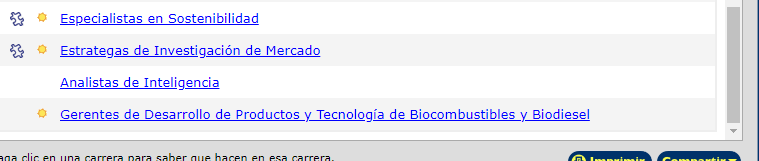
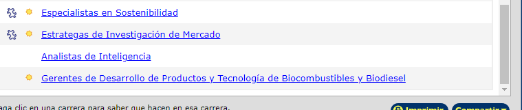

Inteligencia Artificial - Clase 12/08/24
El día de hoy utilizamos Google Colab para sacar las palabras repetidas de una encuesta y crear una gráfica. También creamos una cuenta en GitHub para guardar lo realizado en clase.
Actividades que más me gusta hacer

Se agruparon las actividades que eran similares y se contaron manualmente.
Temas a tratar

Vimos qué datos se repetían y buscamos graficar de una manera que nos brindara dicha información en una gráfica de pastel.
Ronaldo Agredo

Elegimos la columna número 5 y sacamos las palabras repetidas con la ayuda de ChatGPT y las rectificamos manualmente. Hicimos lo mismo con las palabras únicas y luego realizamos un gráfico circular 3D con los números de las palabras repetidas.
clase #2
en la clase se dieron a conocer sobre la historia de la inteligencia Artificial, algunos conceptos
basicos que se manejan en la inteligencia Artificial como algoritmos
pilas, colas etc.
tambien se hablo sobre una persona como alan turing que influyo mucho a los
avances tecnologicos , por ultimo realizamos una conexion en github por medio de comando
clase 29/08/2024
 en la clase se miro un video sobre la estructura de las redes neuronales, la cual se maneja por
reconociemto de pixeles con una imagen de 28x28=784 entradas
en la clase se miro un video sobre la estructura de las redes neuronales, la cual se maneja por
reconociemto de pixeles con una imagen de 28x28=784 entradas posterior a esto la infromacion o el numero que se desea conocer entra a ser analizada por partes en las capas internas donde se hace el reconocimiento del
numero o la informacion sumistrada y dar la informacion final.
clase 12/09/2024
 para la clase del dia de hoy tuvimos una exposicion de nuestro compañero cristian gomez sobre
fundamentos de la ingenieria prompt donde hay aun serie de parametros
para la clase del dia de hoy tuvimos una exposicion de nuestro compañero cristian gomez sobre
fundamentos de la ingenieria prompt donde hay aun serie de parametros para podernos comunicar con las herramientad de la inteligencia artificial, despues realizamos una actividad practica por medio de goole colaboratory donde utilizamos
librerias como tensorflow y numpy donde se realizo un entrenamiento para pasar de celsius a fahrenheit como tambien se utilizo matplotlib.pyplot para sacar graficas.


 
